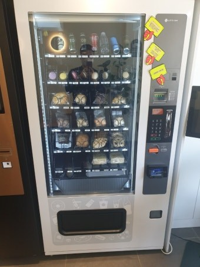

사우나·찜질방·헬스장 무인자판기 설치 가이드 — 음료부터 세면용품·수건까지

사우나·찜질방·헬스장은 무인자판기가 가장 잘 되는 장소 중 하나입니다. 손님이 오래 머물고, 땀을 흘린 뒤라 음료·간식 수요가 확실하며, 근처에 편의점이 없는 경우도 많기 때문입니다. 그런데 이런 공간은 음료만이 아니라 세면용품·수건 같은 소모품 수요까지 있어, 자판기 구성만 잘 잡으면 부가 매출이 꽤 붙습니다. 설치를 다니며 정리한 사우나·찜질방·헬스장 무인자판기 설치 가이드입니다.
1. 음료는 냉장, 아이스크림은 냉동 — 나눠서
가장 기본은 음료 자판기입니다. 땀 흘린 손님은 시원한 걸 찾으니 냉장자판기로 생수·이온음료·탄산음료·건강음료를 시원하게 유지하는 게 핵심입니다. 여기에 여름·찜질방이라면 냉동자판기로 아이스크림을 더하면 회전이 확 붙습니다. 냉장과 냉동을 한 대에 담는 멀티자판기로도 구성할 수 있습니다.
2. 세면용품·수건·면도기 — 소모품 무인판매
사우나·찜질방·헬스장의 숨은 매출은 세면용품 자판기입니다. 샴푸·바디워시 같은 세면용품, 수건 자판기, 일회용 면도기 자판기, 칫솔·때수건 같은 위생용품 자판기를 두면, 프런트 직원이 일일이 판매하지 않아도 24시간 팔립니다. 카운터 인력이 줄어드는 시간대에 특히 효자입니다. 음료 자판기 옆에 소모품 자판기를 나란히 두는 구성이 가장 반응이 좋습니다.

3. 결제는 카드·간편결제로 — 현금 없이
요즘 손님은 지갑 없이 폰만 들고 다닙니다. 카드·삼성페이·카카오페이·네이버페이·QR을 모두 받는 카드결제 자판기(무인판매기)여야 매출을 놓치지 않습니다. 현금 없이 운영되니 동전 관리·도난 걱정도 없고, 매출은 자동으로 집계돼 정산이 편합니다.
4. 화면 달린 스마트 자판기 = 광고까지
요즘은 화면이 달린 스마트 자판기가 많습니다. 손님이 상품을 고르는 화면에 대기 중 디스플레이 광고(디지털 사이니지)를 띄워 시설 안내·이벤트 고지·브랜드 홍보에 쓸 수 있습니다. 사우나 이용요금·마사지·헬스 PT 안내를 자판기 화면으로 돌리는 식이죠. 광고 송출까지 되는 광고 자판기를 원하시면 화면형 기종으로 맞춰 드립니다.
5. 업종별로 이렇게 채웁니다
• 찜질방·사우나 — 냉장 음료 + 세면용품·수건·위생용품, 아이스크림
• 헬스장·피트니스 — 이온음료·단백질 음료·생수 중심, 여기에 수건 자판기
• 스크린골프장·당구장 — 음료·간식·숙취해소 음료
• PC방·스터디카페 — 커피·컵라면·과자·에너지음료
• 펜션·수영장·목욕탕 — 음료 + 물놀이·세면 소모품
6. 운영·비용 — 설치비 0원, 관리는 원격으로
설치비는 0원입니다. 무인이라 관리가 어렵지 않을까 걱정하시는데, 재고와 매출을 원격으로 확인하고 24시간 A/S가 지원됩니다. 자판기는 구입·렌탈·임대 중 선택할 수 있어 초기 부담 없이 시작할 수 있고, 입지·품목 분석부터 기계 반입, 카드 결제 연동까지 함께 잡아 드립니다. 사람이 오래 머무는 사우나·찜질방·헬스장은 자리만 맞으면 회전이 좋은 편이지만, 안 될 자리는 먼저 솔직히 말씀드립니다.
상담·설치 신청
사업자등록증만 있으면 됩니다. 매장 종류(사우나·찜질방·헬스장 등)와 두실 자리만 알려주시면, 음료·소모품 구성부터 결제·광고 화면까지 무료로 설계해 드립니다. 전국 방문, 설치비 0원, 평균 4일 이내.
📞 사우나·헬스장 무인자판기 설치 상담 010-6832-1994